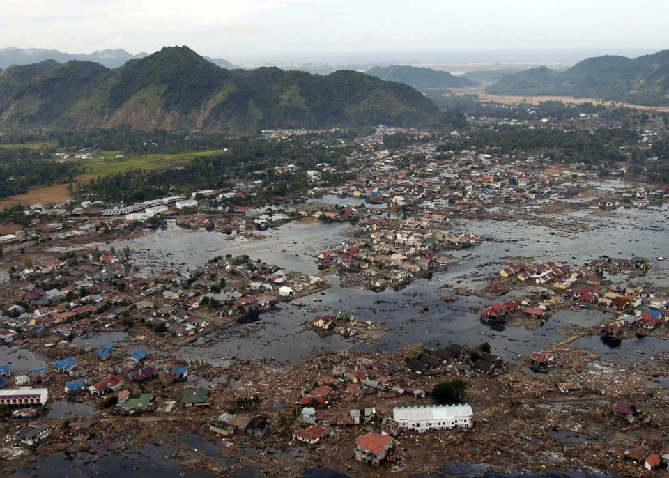

01
The gap is distribution, not facts.
Alt News, BOOM, Factly, Vishvas News have already checked most viral claims. Kasauti sweeps eight Indian fact-check desks in a single SerpApi query and puts their finding where the hoax is.
Paste any WhatsApp forward — Hindi, Hinglish, English, with or without a photo. Kasauti streaks it against the live web through SerpApi, weighs every source by credibility, stamps a verdict with receipts — and drafts the polite reply you can actually send back to the family group.
India is the world's largest WhatsApp market, and the family group is where misinformation lives its best life. Fact-checkers debunk daily — on websites. The hoax lives in your pocket, twelve forwards deep, in Hinglish, demanding to be sent to ten more groups.
Alt News, BOOM, Factly, Vishvas News have already checked most viral claims. Kasauti sweeps eight Indian fact-check desks in a single SerpApi query and puts their finding where the hoax is.
The #1 misinformation format isn't fabricated images — it's genuine photos from old tragedies relabelled as today's news. Google Lens through SerpApi exposes an image's other lives.
The social cost of correcting an elder is why hoaxes win. Kasauti drafts a warm, receipts-attached reply in the language of the forward. Blame the message, never the person.
Every stage is deterministic, reviewable code — the LLM drafts, the code decides what it's allowed to claim.
Offline heuristics score chain-message DNA in English, Hinglish & Devanagari — forwarding pleas, "media is hiding this", miracle cures, emoji storms.
An LLM splits the forward into atomic, checkable claims with diverse search queries. Rule-based fallback works with no LLM at all.
Four strategies on three SerpApi engines, in parallel: organic web, Google News, a fact-check desk sweep, Google Lens.
A transparent registry ranks every source: fact-checkers and PIB outrank blogs; satire sites get flagged as satire.
An LLM judge reads the numbered evidence table — then code caps its confidence to what the evidence supports.
A polite, non-preachy correction in the forward's own language, with the two most credible links attached.
Attach an image URL and Kasauti runs it through Google Lens, maps where else the photo lives, and reads the years its match titles keep citing — even when no page carries a machine-readable date.

Every result is weighted by its publisher's category — a transparent, PR-able registry of ~90 domains in eight tiers. It encodes publisher type, never editorial stance.
A misinformation checker that hallucinates is worse than none. Confidence caps are enforced after the model answers — calibration you can read in the certificate.
if not citationsAn uncited verdict is downgraded, whatever the model felt about it. Confidence ≤ 0.35.
only unknown sourcesNo recognised newsroom, fact-checker or official among the citations? Capped.
true/false > 0.8A definitive verdict above 80% requires a fact-checker or official source directly on point.
satire citedSometimes the forward is a Faking News post taken literally. The label says so.
Knowing a forward is fake is half the battle. Kasauti drafts a warm, ≤75-word correction in the language of the forward — Hinglish in, Hinglish out — with the two most credible links. One tap to copy, paste it in the group, izzat intact.
One check() function behind every interface — including an MCP server, so any AI assistant gains a fact-checking tool.
kasauti serve
# → http://127.0.0.1:7860/appkasauti check "UNESCO ne anthem ko best declare kiya!" --json
from kasauti import check
r = check("Free ₹719 recharge!")
r.overall_label # FALSE{ "mcpServers": { "kasauti":
{ "command": "kasauti",
"args": ["mcp"] } } }Not an add-on. Every fact the verdict cites was retrieved live through it — structured JSON, no scraping, no CAPTCHAs, one clean module.
One check ≈ 3–7 searches → 40–80 checks a month on a free key. A budget counter prints on every certificate; responses are disk-cached; the whole test suite runs on bundled fixtures — zero credits to develop, test or CI.
Verify before you amplify.